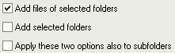

Ajout de fichiers & dossiers
Il y a plusieurs manières d'ajouter des fichiers à la liste :
Bouton "Fichiers"
Lorsque vous cliquez sur le bouton  "Fichiers" une fenêtre Windows classique de sélection de fichiers apparaît.
Cette fenêtre est contrôlée par Windows, donc elle fonctionne comme dans d'autres programmes.
Une chose à savoir est que l'ordre des fichiers qui seront renvoyés par cette fenêtre n'est pas spécialement l'ordre que vous voyez.
D'abord, Windows renvoie le fichier qui avait le focus (i.e. qui a un bord pointillé, c'est généralement le dernier fichier qui a été sélectionné).
Ensuite il envoie tous les fichiers qui le suivent. Lorsqu'il arrive à la fin, il revient au début et envoie le reste.
"Fichiers" une fenêtre Windows classique de sélection de fichiers apparaît.
Cette fenêtre est contrôlée par Windows, donc elle fonctionne comme dans d'autres programmes.
Une chose à savoir est que l'ordre des fichiers qui seront renvoyés par cette fenêtre n'est pas spécialement l'ordre que vous voyez.
D'abord, Windows renvoie le fichier qui avait le focus (i.e. qui a un bord pointillé, c'est généralement le dernier fichier qui a été sélectionné).
Ensuite il envoie tous les fichiers qui le suivent. Lorsqu'il arrive à la fin, il revient au début et envoie le reste.
Il peut également y avoir quelques problèmes de vitesse lorsque vous tentez d'ajouter des milliers de fichiers.
La fenêtre peut prendre une éternité à envoyer les noms de fichiers au programme.
Si c'est le cas, utilisez la fonction d'ajout de "Dossiers" à la place.
Bouton "Dossiers"
Lorsque vous cliquez sur le bouton  "Dossiers" une fenêtre apparaît, vous permettant de choisir un ou
plusieurs dossiers.
Cette fenêtre n'a pas été faite que pour ajouter des dossiers à la liste, mais aussi pour y ajouter leur contenu.
"Dossiers" une fenêtre apparaît, vous permettant de choisir un ou
plusieurs dossiers.
Cette fenêtre n'a pas été faite que pour ajouter des dossiers à la liste, mais aussi pour y ajouter leur contenu.
Quelques options dans le bas de la fenêtre permettent de spécifier ce qui doit être ajouté à la liste :

La première spécifie si les fichiers contenus dans le(s) dossier(s) sélectionné(s) doivent être ajoutés ou non.
La seconde spécifie si les dossiers sélectionnés doivent être ajoutés ou non.
La troisième spécifie si le sous-dossiers des dossiers sélectionnés doivent être inclus ou non (cela s'applique à tous les sous-dossiers, pas juste au premier niveau).
Pour le moment, la fenêtre n'affiche pas les éléments du réseau ou les périphériques spéciaux qui n'ont pas leur propre lettre de lecteur
(les disques réseaux auxquels on a attribué une lettre seront affichés dans la liste). Dans le futur cela pourra être amélioré (au moins pour les éléments réseau).
En attendant, un bouton "Réseau" permet de choisir un dossier sur un disque réseau.
Pour ajouter ces dossiers, le drag & drop peut être plus facile que cette fenêtre.
Drag & drop (glisser-déposer) de fichiers
Vous pouvez glisser des fichiers depuis l'Explorateur Windows (et autres programmes qui sont compatibles avec lui, comme Total Commander ou Servant Salamander)
directement vers la fenêtre principale d'Ant Renamer. Ceci est en général beaucoup plus facile pour ajouter des fichiers plutôt que de les sélectionner dans
la fenêtre d'ajout de fichiers.
Par défaut, lorsque vous déposez des fichiers une fenêtre apparaît. Elle vous permet de choisir comment vous voulez ajouter ces fichiers.
Ces options sont les mêmes que celles qui sont disponibles dans la fenêtre d'ajout de Dossiers.
Une option étiquetée "Ne pas demander..." permet de conserver les paramètres sélectionnées pour les prochains drag & drop, pour ne pas que la fenêtre ne soit
à nouveau affichée. Si vous cochez cette option et désirez ensuite l'annuler (ou changer les paramètres), vous pouvez faire cela dans la page "Fichiers & dossiers"
de la fenêtre des Options. Pour faire réapparaître cette fenêtre une seule fois sans changer son comportement par défaut, vous pouvez
maintenir enfoncée la touche Ctrl ou Shift lorsque vous déposez les fichiers. Cela permet, par exemple, d'ajouter un dossier à la liste alors que le comportement
par défaut consiste en l'ajout des fichiers uniquement.
Les mêmes limitations que pour la fenêtre d'ajout de fichiers s'appliquent (ordre des fichiers et problèmes de vitesse avec de nombreux fichiers).